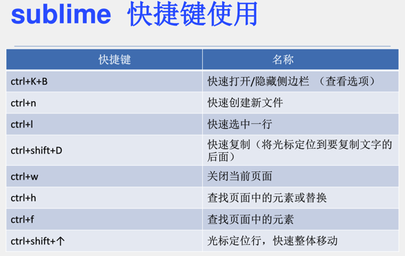
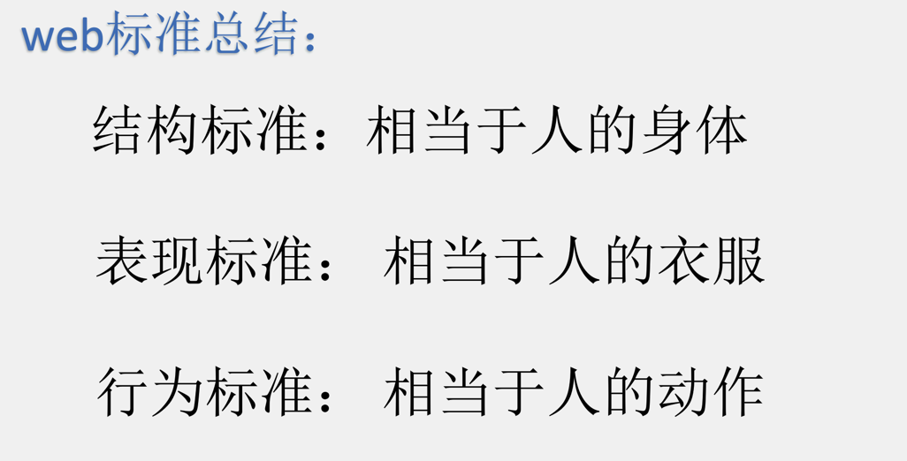
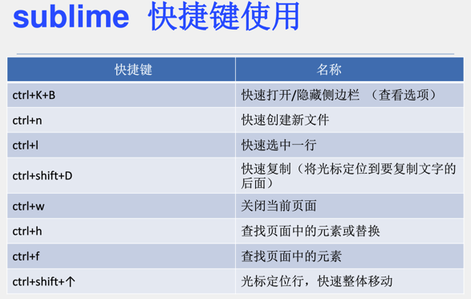
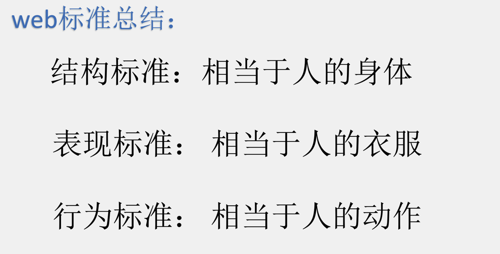

我就是看看我是不是加粗的段落
我就是看我是不是斜了
我就看看你删除没删除
我就看看文字有没有加下划线
我就是优美的红色字体 




我就是id为4C的段落标签
我就是id为5C的段落标签
1•*“<2><=
对，我就是一个基本的表格：要用到3个标签：table表格，tr：表示表的行，td表示每行的列，具体的单元格，th和td类似，只不过是格式化的标题
table的标签的属性：border设置边框 默认为0 没有边框；cellspacing 设置单元格与单元格之间的距离；cellpadding设置文字与单元格之间的距离：| 我是第1列 | 我是第2列 | 我是第3列 | ||
| 我就是第2行就我自己，我任性 | ||||
| 我就是第3行，我是老大 | 我就是第3行，我是老2 | 我就是第3行，我是老3 | 我就是第3行，我是老4 | 我就是第3行，我是老5 |
对，我还是表格：caption表示表的居中显示的标题, th表示加粗的表头；thead：用于定义表格的页眉；tfoot：用于定义表格的页脚；tbody用于定义表格的主体
| 目录 | 课程 | |
|---|---|---|
| Web | html 基础教程 | css 基础教程 |
| js 基础教程 | php 基础教程 | |
终于到了交互输入的地方了：type类型有很多种：text、url、email、password、radio、checkbox、button、submit、reset、image、hidden、file； name自己定义该控件的名称，value表示 自定义默认输入的文本值，readonly：值为readonly，disabled:值为disabled,checked:值为checked ,maxlength最大输入的整数，图片为src